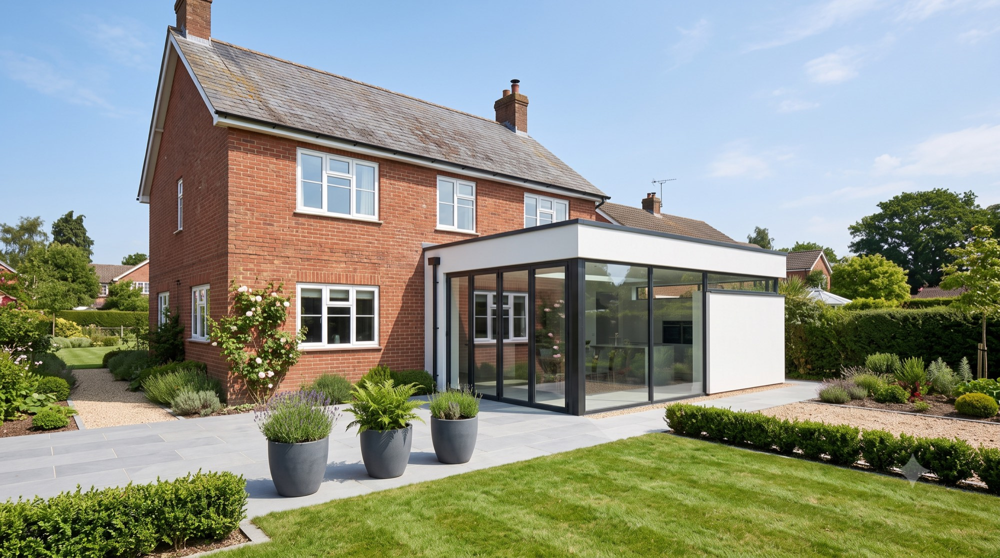
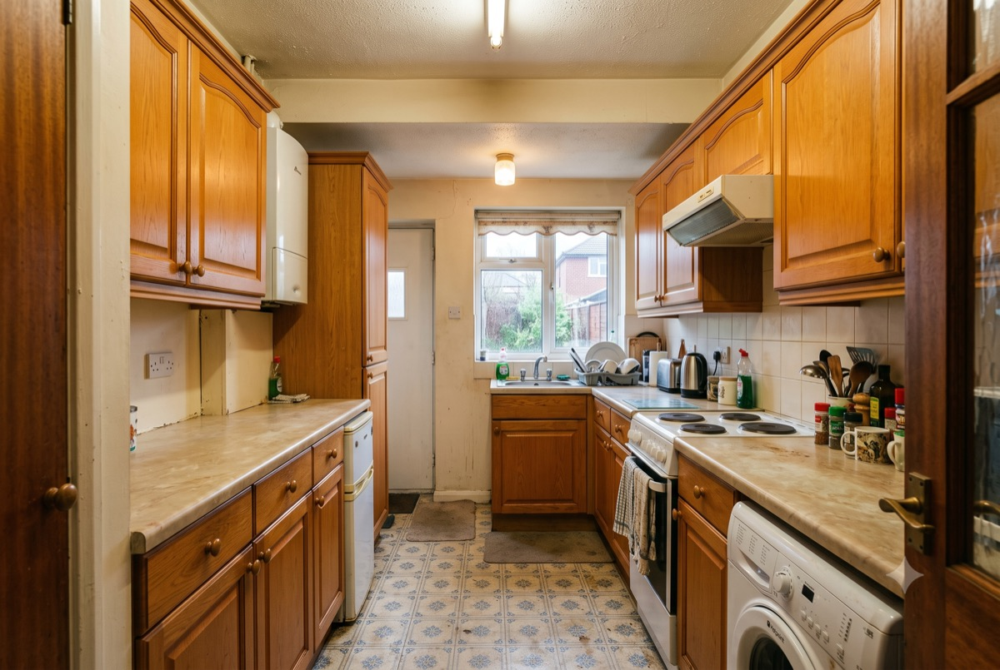
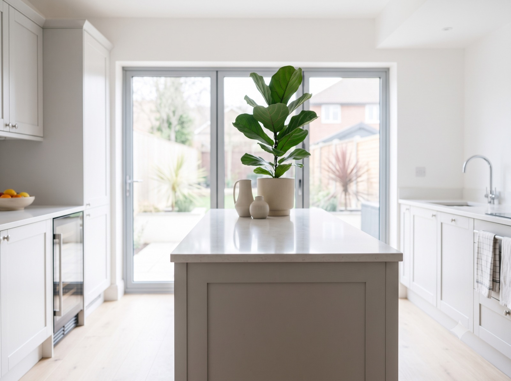
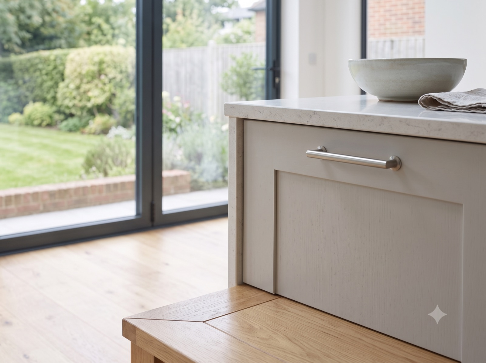

Extension
Wraparound Extension
Wimbledon
12-week build
Single-storey wraparound
Kitchen-diner reconfiguration
Before & After
Drag the slider to compare the original kitchen with the finished wraparound extension.


Before AfterThe original kitchen (left) vs. the finished wraparound extension (right)
The brief was simple to say and harder to deliver: more space in the kitchen without swallowing the garden. The existing kitchen was small, dark, and cut off from the rest of the ground floor — the kind of layout that made cooking feel like a chore rather than something to enjoy.
We designed a single-storey wraparound extension that reworks the side return and rear of the house into one open kitchen-diner, with full-width bi-fold doors onto the garden. A structural steel beam let us remove the old dividing wall entirely, so the space now reads as one room rather than three cramped ones.
The build ran for 12 weeks, on the timeline we quoted at the outset. The family stayed in the house throughout, with dust and disruption kept to the working area.
Finished Gallery


“We'd looked at extending for years but never trusted anyone enough to commit. Ashworth & Vale were upfront about cost and timeline from day one, and delivered exactly what they promised.”
Want a space like this?
Get in touch and tell us what you have in mind.